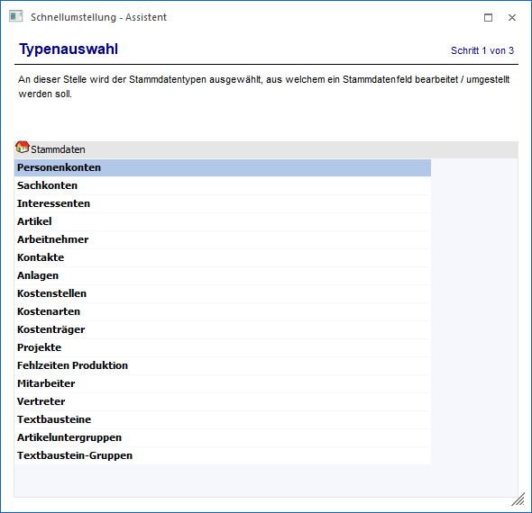
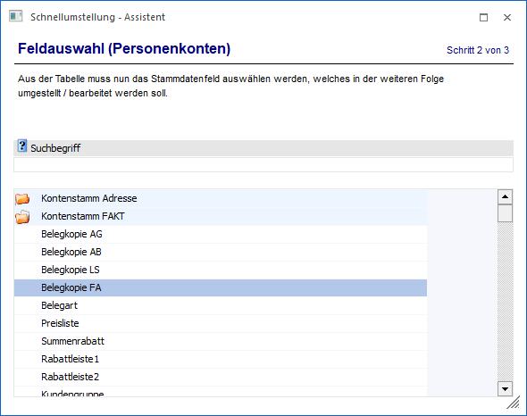
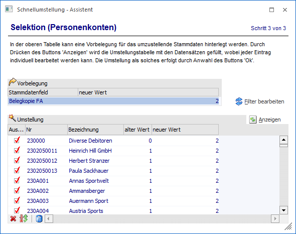
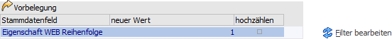
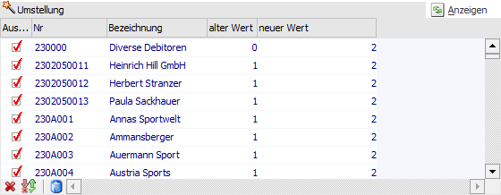
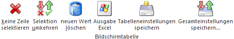
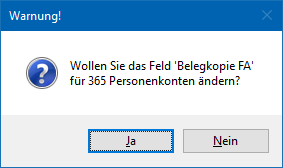
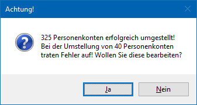

Im Programmpunkt
1 WinLine START
1 Vorlagen
1 Schnellumstellung - Assistent
können für viele Stammdatenbereiche auf einfache Art und Weise Stammdatenfelder geändert bzw. neue Werte vergeben werden. Dabei wird man von einem Assistenten geleitet.
Schritt 1 - Typenauswahl
Im 1. Schritt muss der Datentyp gewählt werden, für welchen die Stammdatenfelder geändert bzw. neue Werte vergeben werden sollen. Hier stehen alle Stammdaten zur Verfügung, für die es Vorlagen oder Eigenschaften gibt.

Diese Datentypen können sein:
ü Personenkonten
ü Sachkonten
ü Interessenten
ü Artikel
ü Arbeitnehmer
ü Kontakte (Ansprechpartner)
ü Anlagen
ü Kostenstellen
ü Kostenarten
ü Kostenträger
ü Projekte
ü Fehlzeiten Produktion
ü Mitarbeiter
ü Vertreter
ü Textbausteine
ü Artikeluntergruppen
ü Textbaustein-Gruppen
Durch Anklicken des Buttons "Vor" bzw. einem Doppelklick auf den entsprechenden Datentyp kann zu Schritt 2 gewechselt werden. Durch Drücken des Buttons "Ende" bzw. der ESC-Taste wird das Fenster geschlossen.
Schritt 2 - Feldauswahl
Im 2. Schritt kann entschieden werden, welches Stammdatenfeld beim gewählten Stammdatenobjekt verändert werden soll. In der Tabelle werden alle Datenfelder in Tabellenform angezeigt, welche für das gewünschte Objekt vorhanden sind.

Ø Suchbegriff
Durch die Eingabe eines Suchbegriffs kann nach einem Feld gesucht werden. Die Suche wird dabei per Enter-Taste ausgelöst.
Durch Anklicken des Buttons "Vor" bzw. einem Doppelklick auf das entsprechende Feld kann zu Schritt 3 gewechselt werden. Durch Drücken des Buttons "Ende" bzw. der ESC-Taste wird das Fenster geschlossen. Wenn in den Schritt 1 zurückgewechselt werden soll, dann ist dieses per Button "Zurück" möglich.
Schritt 3 - Selektion
Im 3. Schritt wird definiert, welche Daten mit welchen Werten versehen werden sollen.

Vorbelegungstabelle

In der Vorbelegungstabelle wird das Stammdatenfeld, welches für die Umstellung gewählt wurde, angezeigt und kann mit einem neuen Wert versehen werden.
Ø Stammdatenfeld
An dieser Stelle wird das Stammdatenfeld, welche für die Umstellung gewählt wurde, angezeigt.
Ø neuer Wert
In diesem Feld kann der neue Wert, welche bei den Stammdatensätzen hinterlegt werden soll, vorgegeben werden.
Hinweis
Es handelt sich hierbei nur um eine Vorbelegung für die Änderungstabellen. In dieser Tabelle kann die Vorgabe angepasst werden.
Ø hochzählen
Diese Option steht nur bei Eigenschaften des Typs "2 - Integer" bzw. "4 - Double" zur Verfügung. Durch die Aktivierung der Checkbox wird der "neue Wert" an den ersten Stammdatensatz übergeben und die weiteren Stammdatensätze erhalten eine aufsteigende Nummernfolge.
Ø Filter bearbeiten
Durch Anklicken des Buttons können selektive Einschränkungen für die Stammdatenauswahl durchgeführt werden. Hierbei können auch Filter verwendet werden, welche im EXIM oder im Stammdaten-Editieren-Fenster gespeichert wurden.
Ø Anzeigen
Durch Anwahl des Buttons "Anzeigen" wird die Änderungstabelle (unter Berücksichtigung des Filters) mit allen existierenden Stammdatensätzen des gewählten Typs gefüllt und die Spalte "neuer Wert" mit dem Wert der Vorbelegungstabelle versehen.
Änderungstabelle

In der Änderungstabelle werden die einzelnen Stammdatensätze angezeigt.
Ø Auswahl
Mit Hilfe der Checkbox kann definiert werden, welche Stammdatensätze tatsächlich geändert werden soll.
Ø Nr / Bezeichnung
In diesen Spalten wird die Nummer und / oder die Bezeichnung des Stammdatensatzes angezeigt.
Ø alter Wert
An dieser Stelle wird der bisherige Wert des zu ändernden Felds pro Stammdatensatz angezeigt.
Ø neuer Wert
In dieser Spalte wird der neue Wert angezeigt, wobei eine Vorbelegung aufgrund der Vorbelegungstabelle stattfindet. Es handelt sich hierbei um ein Eingabefeld, d.h. die Vorbelegung kann individuell angepasst werden.
Tabellenbuttons

Ø keine Zeile selektieren
Es wird die Checkbox der Spalte "Auswahl" bei allen Zeilen deaktiviert.
Ø Selektion umkehren
Es wird die Auswahl der Spalte "Auswahl" umgekehrt, d.h. die selektierten Stammdaten deaktiviert und die nicht selektierten Stammdaten aktiviert.
Ø neuen Wert löschen
Durch Anwahl des Buttons wird der Inhalt der Spalte "neuer Wert" bei allen Stammdatensätzen geleert.
Ø Ausgabe Excel
Durch Anwahl des Buttons "Ausgabe Excel" wird der Inhalt der Tabelle nach Microsoft Excel übergeben.
Ø Tabelleneinstellungen speichern
Die Spalten einer Tabelle können grundsätzlich an beliebige Positionen verschoben, bzw. in der Breite entsprechend angepasst werden. Durch Anwahl des Buttons "Tabelleneinstellungen speichern" werden die Einstellungen benutzerspezifisch gespeichert und bei dem nächsten Aufruf des Programmpunktes wieder vorgeschlagen.
Ø Gesamteinstellungen speichern
Im Gegensatz zu "Tabelleneinstellungen speichern" können mit "Gesamteinstellungen speichern" mehrere Tabellenaufbauten gespeichert und nach Wunsch geladen werden. Zusätzlich werden Sonderfunktionen der Tabelle (z.B. "Spalte gruppieren") ebenfalls bei der Speicherung bedacht.
Buttons
Ø Ok
Durch Drücken des Buttons "Ok" bzw. der F5-Taste wird die Umstellung für alle ausgewählten Zeilen durchgeführt. Hierbei wird zunächst eine Meldung ausgegeben, welche mit "Ja" bestätigt werden muss.

Hinweis 1
Nach einer erfolgreichen Umstellung wird ein Protokoll über die Schnellumstellung in den Spooler abgelegt.
Hinweis 2
Treten bei der Umstellung Fehler auf, dann wird eine entsprechende Meldung am Bildschirm ausgegeben.

Wenn diese Meldung mit "Ja" bestätigt wird, dann bleibt WinLine im 3. Schritt des Schnellumstellungs-Assistenten stehen und zeigt die fehlerhaften Datensätze samt Fehlermeldung in der Vorbelegungstabelle an.
Ø Ende
Durch Drücken des Buttons "Ende" bzw. der ESC-Taste wird das Fenster geschlossen. Eventuell vorgenommene Änderungen werden nicht gespeichert.
Ø Zurück
Durch Anwahl des Buttons "Zurück" kann in den vorherigen Schritt des Assistenten gewechselt werden.
Ø Vor
Durch Anwahl des Buttons "Vor" kann in den nächsten Schritt des Assistenten gewechselt werden.
Hinweis für die Umstellung der Artikelgruppen
In der Artikelgruppe wird gesteuert wie viele Nachkommastellen der Preis eines Artikels hat. Wenn der Artikel mit einem Preis mit 4 Nachkommastellen angelegt wurde, so wird bei einer Änderung der Artikelgruppe (auf eine mit weniger Nachkommastellen) der Preis zwar mit weniger Nachkommastellen angezeigt, intern bleibt jedoch der ursprüngliche Preis erhalten (mit denen auch die Berechnungen durchgeführt werden). D.h. nach einer Umstellung der Artikelgruppen müssen die Preise über die Preiswartung korrigiert werden.
Hinweis für die Umstellung der Felder
ü Auspr. 1 von
ü Auspr. 1 bis
ü Auspr. 2 von
ü Auspr. 2 bis
Diese Felder können nur umgestellt werden, wenn noch keine Ausprägung im umzustellenden Bereich vorhanden ist.
Beispiel
Es gibt Ausprägungsartikel mit Lager B-Bregenz, S-Salzburg, und W-Wien und es sollte umgestellt werden von S-Salzburg bis W-Wien, so ist dies NICHT möglich, da es einen Ausprägungsartikel gibt (B-Bregenz) der nicht innerhalb der Einschränkung liegt.
Des Weiteren werden bei Auswahl eines dieser Felder nach Drücken des "Anzeigen"-Buttons nur Hauptartikel mit Ausprägungen angezeigt.